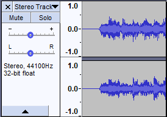
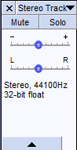
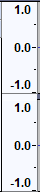
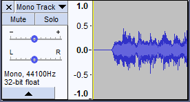
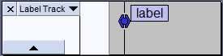
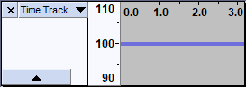
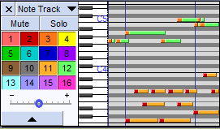

Track Control Panel and Vertical Scale
Audio (stereo) Track
- 
Track Control Panel
 The Track Control Panel at the left of the audio track has controls and status indicators for this track. Left-clicking other than on a control performs track selection. Left-clicking other than on a control and dragging up and down rearranges the order of the tracks. The controls are as follows:- An button to delete the track.
- A dropdown menu, accessed by clicking on the track name or the little black triangle at the top right of the Track Control Panel, enabling you to edit or move the audio track.
- and buttons to enable you to mute or solo the track
- Gain slider for adjusting the volume of the track
- Pan slider to position the audio of this track in the stereo sound stage.
- Status indicators to show the sample rate in Hz and the sample format or bit depth.
- A button to collapse or restore the height of the track.
Vertical Scale
 The Vertical Scale displays amplitude when showing the waveform, or frequency when showing the spectrum or pitch. - The amplitude scale shown to left is the default linear scale, with 1.0 being the maximum value of positive signals and -1.0 the maximum of negative signals.
- If the display is changed to Waveform dB in the Audio Track Dropdown Menu, the scale shows dB values for positive signals only, ranging from maximum 0 dB to the minimum dB level set in Interface Preferences, or as varied using the mouse wheel (see below).
When the mouse pointer is over the scale it changes to a magnify icon enabling you to zoom vertically using the mouse controls.
For details please see this section of the Audio Tracks page.
Mono Track
A mono track has the same set of controls as a stereo track
- 
Label Track
- 
A label track has an empty Vertical Scale Ruler.
It does have a dropdown menu, accessed by clicking on the track name or the little black triangle at the top right of the Track Control Panel, enabling you to edit or move the label track.
Please see this section of the Audio Tracks page for details.
Time Track
- 
The vertical Scale in Time Tracks can be set to either Linear Scale (default setting, as shown here) or Logarithmic Scale. This along with other settings for your Time track can be controlled from the dropdown menu accessed by clicking on the track name or the little black triangle at the top right of the Track Control Panel.
See this section of the Time Tracks page for more details.
Note Track
- 
Note Tracks display (and play) data from MIDI files.
The Track Control Panel and Vertical Scale are rather different to all other tracks in Audacity:
- The Vertical Scale shows the pitch position of the displayed notes shown on a piano keyboard. As with the audio tracks you can zoom the scale of the Vertical Scale piano keyboard using your mouse.
- The Track Control panel shows the channels, color coded to tie in with the channels displayed, that are to be played and allows you to toggle individual channels by left-clicking or toggle all other channels off by right-clicking.
For more details please see Note Tracks.